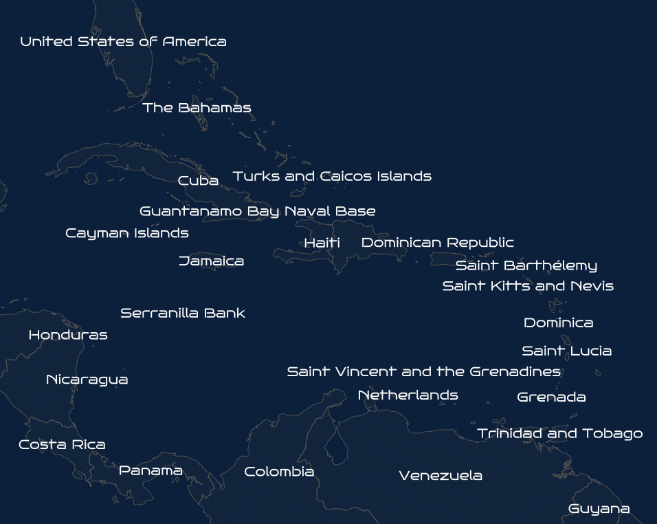

Fonts#
MapServer Studio allows you to choose from thousands of different fonts to use in your maps.
To use a font first set the FONTSET in your Mapfile.
A FONTSET is a text file that contains a font name and its associated TrueType file. TrueType fonts can be rendered at any size
without losing quality.
MapServer Studio currently supports two FONTSET values: google and microsoft. These values can be
added to a Mapfile to allow fonts from either of these collections to be used:
MAP
NAME "MyFontsMap"
FONTSET "google"
...
Selecting a Font#
Once a FONTSET has been selected any of the fonts in the collection can be used when rendering a map.
Fonts are typically used in a LABEL object.
LABEL
COLOR 150 150 150
FONT "arial"
TYPE truetype
SIZE 12
END
Note
Aliases are not case-sensitive so “Arial”, “arial”, and “ARIAL” can all be used. MapServer Studio also allows for aliases with spaces or hyphens e.g. “Times New Roman Italic” or “Times-New-Roman-Italic” are equivalent.
Below is an example of a label using the Monsieur La Doulaise font from the Google fontset. You can play with the online example here.
MAP
NAME "Caribbean"
FONTSET "google"
..
LABEL
FONT "Monsieur La Doulaise" # can also use "Monsieur-La-Doulaise"
TYPE TRUETYPE
SIZE 28
POSITION AUTO
PARTIALS FALSE
BUFFER 5
END
With a change of font and just a couple of changes to the labels and the map colour you can create a very different looking map. You can play with the online example here.
MAP NAME "Scifi" FONTSET "google" .. LABEL FONT "Bruno Ace" # can also use "Bruno-Ace" TYPE TRUETYPE SIZE 14 COLOR 255 255 255 POSITION AUTO PARTIALS FALSE BUFFER 5 END
Using Fontsets Locally#
If you have created a Mapfile using MapServer Studio, and want to host the Mapfile elsewhere you will need to
obtain copies of the TTF files used in your map and then create a fontset file containing any of the fonts used in your map.
For example create a fonts.txt with the following entries:
Bruno-Ace BrunoAce-Regular.ttf
Monsieur-La-Doulaise MonsieurLaDoulaise-Regular.ttf
You will then need to reference this file in your Mapfile:
FONTSET "../path/fonts.txt"
Aliases cannot contain spaces (see this issue), so a workaround
is to replace these with hyphens. The paths to the TTF files are relative to the fonts.txt file.
Google Fonts#
Google Fonts is a collection of open-source fonts that can be used by anyone for free. From the FAQ:
all Google Fonts are open source and are without cost…you can use them commercially, and even include them within a product that is sold commercially.
There are over 3,350 fonts in the collection. To find a font browse or search the fonts at https://fonts.google.com/.
Then simply use the name of the font as the
FONT value in your Mapfile. There are
Microsoft Fonts#
This fontset contains fonts from Microsoft True Type Core Fonts for the Web. These can be installed on a Linux machine using the following command:
apt install ttf-mscorefonts-installer
The End User License Agreement does not restrict using the fonts when generating a map.
Below is the full list of available fonts in this fontset:
Andale-Mono andalemo.ttf
Andale-Mono-Regular andalemo.ttf
Arial Arial.ttf
Arial-Black Arial_Black.ttf
Arial-Black-Regular Arial_Black.ttf
Arial-Bold Arial_Bold.ttf
Arial-Bold-Italic arialbi.ttf
Arial-Italic ariali.ttf
Arial-Regular Arial.ttf
Comic-Sans-MS Comic_Sans_MS.ttf
Comic-Sans-MS-Bold Comic_Sans_MS_Bold.ttf
Comic-Sans-MS-Regular Comic_Sans_MS.ttf
Courier-New cour.ttf
Courier-New-Bold Courier_New_Bold.ttf
Courier-New-Bold-Italic Courier_New_Bold_Italic.ttf
Courier-New-Italic couri.ttf
Courier-New-Regular cour.ttf
Georgia Georgia.ttf
Georgia-Bold georgiab.ttf
Georgia-Bold-Italic georgiaz.ttf
Georgia-Italic georgiai.ttf
Georgia-Regular Georgia.ttf
Impact Impact.ttf
Impact-Regular Impact.ttf
Times-New-Roman times.ttf
Times-New-Roman-Bold Times_New_Roman_Bold.ttf
Times-New-Roman-Bold-Italic timesbi.ttf
Times-New-Roman-Italic timesi.ttf
Times-New-Roman-Regular times.ttf
Trebuchet-MS Trebuchet_MS.ttf
Trebuchet-MS-Bold Trebuchet_MS_Bold.ttf
Trebuchet-MS-Bold-Italic trebucbi.ttf
Trebuchet-MS-Italic Trebuchet_MS_Italic.ttf
Trebuchet-MS-Regular Trebuchet_MS.ttf
Verdana Verdana.ttf
Verdana-Bold verdanab.ttf
Verdana-Bold-Italic Verdana_Bold_Italic.ttf
Verdana-Italic verdanai.ttf
Verdana-Regular Verdana.ttf
Webdings Webdings.ttf
Webdings-Regular Webdings.ttf